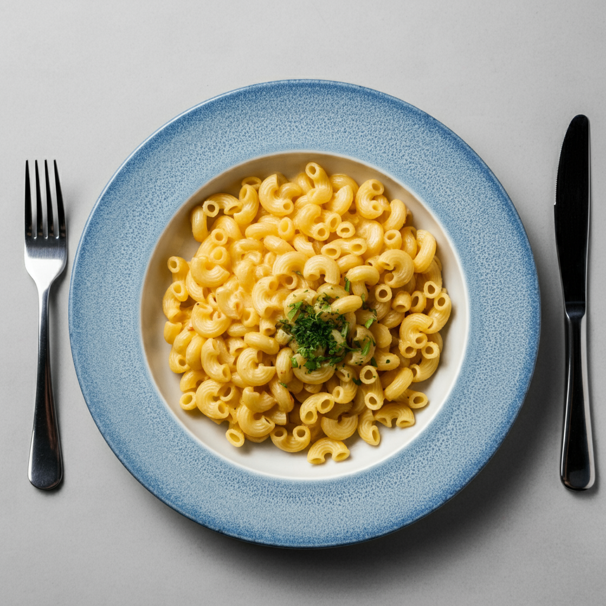

Macaroni

Description
Indulge in the ultimate comfort food with our deliciously simple macaroni recipe! Perfectly cooked al dente pasta, enveloped in a creamy, velvety cheese sauce, creates a dish that’s both satisfying and easy to prepare. Whether you’re looking for a quick weeknight dinner or a cozy meal to share with loved ones, this macaroni is sure to please. With just a handful of ingredients and minimal effort, you can whip up a bowl of cheesy goodness that will have everyone coming back for seconds. Dive into a plate of pure comfort and enjoy the timeless delight of homemade macaroni!
Ingredients
- 2 cups of macaroni pasta
- 4 cups of water
- 1 cup of shredded cheese (cheddar or your favorite)
- 1/2 cup of milk
- Salt to taste
- Pepper to taste
Steps
- Bring 4 cups of water to a boil in a large pot.
- Add a pinch of salt to the boiling water.
- Add 2 cups of macaroni pasta and cook according to the package instructions until al dente (usually about 8-10 minutes).
- Drain the pasta and set aside.
- In the same pot, add 1/2 cup of milk and heat over medium heat.
- Gradually add 1 cup of shredded cheese, stirring constantly until the cheese is fully melted and the sauce is smooth.
- Return the cooked macaroni to the pot with the cheese sauce.
- Stir well to ensure the pasta is evenly coated with the sauce.
- Add salt and pepper to taste.
- Serve hot and enjoy your creamy, cheesy macaroni!